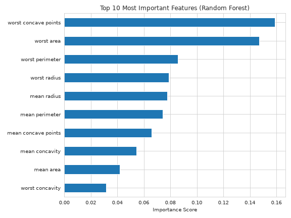

Feature Importance
Last updated on 2026-10-06 | Edit this page
Estimated time: 20 minutes
Overview
Questions
- Which features had the biggest influence on the model’s predictions?
- Can the model’s most important features tell us something about the underlying biology?
- What are the main steps in a machine learning project from beginning to end?
Objectives
- Extract and plot feature importances from a trained Random Forest.
- Use feature importance to understand which measurements the model found most useful.
- Explain why an important feature is not necessarily the cause of a disease.
- Recap the full workflow from raw data to interpreted model.
Where we left off
This recreates everything from the previous episodes, including the trained Random Forest model. If your Colab session is still active and you’ve already run the setup code, you do not need to run it again. Otherwise, execute the following code before continuing:
PYTHON
import pandas as pd
import numpy as np
import matplotlib.pyplot as plt
import seaborn as sns
from sklearn.datasets import load_breast_cancer
from sklearn.model_selection import train_test_split
from sklearn.preprocessing import StandardScaler
from sklearn.ensemble import RandomForestClassifier
sns.set_style("whitegrid")
data = load_breast_cancer()
df = pd.DataFrame(data.data, columns=data.feature_names)
df['diagnosis'] = data.target
X = df[list(data.feature_names)]
y = df['diagnosis']
X_train, X_test, y_train, y_test = train_test_split(
X, y, test_size=0.3, random_state=42, stratify=y
)
scaler = StandardScaler()
X_train_scaled = scaler.fit_transform(X_train)
X_test_scaled = scaler.transform(X_test)
rf_model = RandomForestClassifier(n_estimators=100, random_state=42)
rf_model.fit(X_train_scaled, y_train)RandomForestClassifier(random_state=42)In a Jupyter environment, please rerun this cell to show the HTML representation or trust the notebook.
On GitHub, the HTML representation is unable to render, please try loading this page with nbviewer.org.
Parameters
Fitted attributes
Asking the model what mattered
A trained Random Forest can tell us which inputs it leaned on most.
The feature_importances_ attribute is derived from how
often, and how effectively, each feature was used to split across all
100 trees.
PYTHON
importances = pd.Series(rf_model.feature_importances_, index=X_train.columns)
top_features = importances.sort_values(ascending=False).head(10)
plt.figure(figsize=(8, 6))
top_features.sort_values().plot(kind='barh', color='#1f77b4')
plt.title('Top 10 Most Important Features (Random Forest)')
plt.xlabel('Importance Score')
plt.tight_layout()
plt.show()
Challenge 1: If you could only measure three
Suppose your lab loses funding and you can only afford to measure three physical traits from each biopsy.
Based on this chart, which three would you choose, and what would you be giving up?
The top-ranked features in the chart are the defensible choice. They are the measurements the model relied on most when distinguishing malignant from benign tumours.
What you’d be giving up is robustness. The model’s performance was built on all 30 features working together; a three-feature model would almost certainly be less accurate, and would have no fallback when one measurement is noisy or missing for a particular patient.
There’s also a subtler cost: several of the top features are closely related to one another (radius, perimeter and area all measure tumour size). Picking three highly correlated measurements gives you less independent information than picking three that capture different aspects of the tumour.
This is the question that bridges data science and lab reality, so give the room time with it. Researchers and clinicians will often raise practical considerations the chart can’t capture — cost per assay, turnaround time, whether a measurement requires a specialist — and those are exactly the right instincts to surface.
Importance is not causation
Feature importance tells us which features the model found most useful when making predictions. It does not tell us what causes the disease.
Some features are closely related to each other and may contain similar information. In these cases, the model may rely more heavily on one feature than another, even though both are useful. A low importance score does not mean a feature is unimportant biologically.
Think of feature importance as a way to identify useful measurements, not as proof of a biological cause.
Notice that many of the features ranked highest by the model are the same ones that stood out in the pairplot from Episode 2. What we first observed by eye, the model has now confirmed quantitatively. It’s a nice example of how visual exploration and machine learning can work together to help us understand the data.
Wrap-up
You’ve now gone from a raw table of numbers to a working, interpretable classifier. Here’s a recap of the complete workflow:
-
Load the data and identify features
(
X) and target (y). - Explore it visually, and discover that no single feature separates the classes.
- Split into training and test sets so evaluation stays honest.
- Scale the features so that measurements on larger scales do not dominate the analysis.
- Apply PCA to reduce the number of dimensions and explore the data more easily.
- Train a Random Forest on the training data.
- Evaluate on unseen patients using sensitivity and specificity, not just accuracy.
- Interpret the results by identifying which features were most important to the model.
The same workflow can be used for many other datasets. Replace this data with your own, and most of the steps stay the same.
What you now have
Beyond the code, you’ve learned when predictive analytics is the right tool for the job. A t-test helps answer whether two groups differ on average, while a classifier helps predict the group for a new patient. They answer different questions and serve different purposes.
Leave genuine room for Q&A. Can get feedback as well?
Data citation
The Breast Cancer Wisconsin (Diagnostic) dataset used throughout this workshop is distributed under a CC BY 4.0 licence and should be credited as:
Wolberg, W., Mangasarian, O., Street, N., & Street, W. (1993). Breast Cancer Wisconsin (Diagnostic) [Dataset]. UCI Machine Learning Repository. https://doi.org/10.24432/C5DW2B
-
feature_importances_reveals which measurements a Random Forest relied on most when making its decisions. - Feature importance is useful for prioritising which measurements to collect, but it is not evidence of biological causation.
- Correlated features can share or trade importance arbitrarily between them.
- The same machine learning workflow can be applied to many different datasets: load, explore, split, scale, train, evaluate, and interpret.